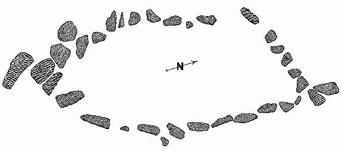
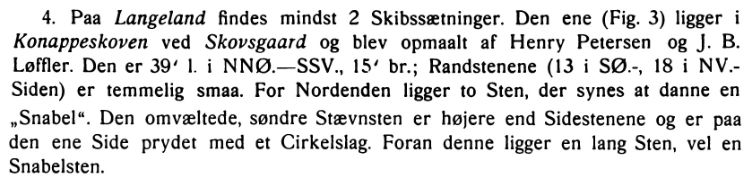
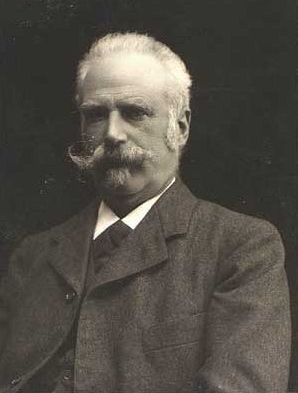
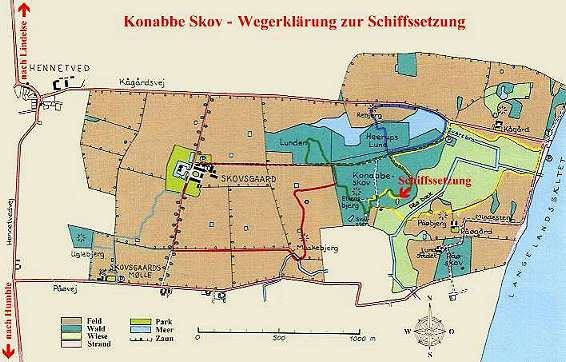
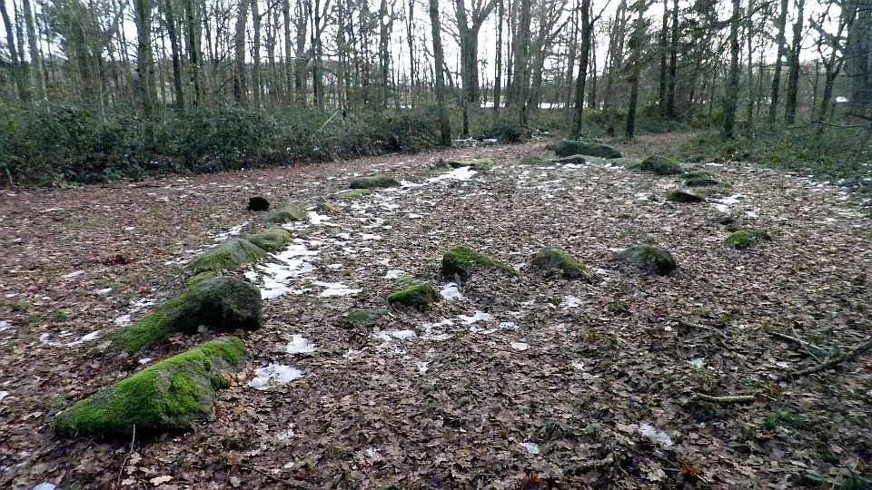

Konabbe Skov
Schiffssetzung


91 - Konabbe Skov (auch Konappe Skov benannt) - Letztes Update 03.07.2024
Navidaten: 54.85105, 10.73052 oder: Konabbe Skov, 5900 Rudkøbing Sogn, Dänemark
Die "Schiffssetzung Konabbe Skov" (Wald) besteht aus recht kleinen Steinen, die nur wenig aus dem Waldboden hervorragen. Sie liegt auf einem gerodeten und neu bepflanzten ehemaligen Hochwaldgrundstück in Richtung N-S orientiert und hat die Ausmaße von ca. 14,5 x 6 m. Vor dem Südende des "Schiffs" liegt ein größerer, umgestürzter Stein - vermutlich der Stevenstein, der nicht selten größer als die übrigen ist. Laut "Fund og Fortidsminder" findet sie im Jahre 1875 ihre erste Erwähnung.
Beim Südende der Anlage sieht man bei einem der Steine einen Halbkreis eingeschlagen: Wohl ein Indiz dafür, dass in späterer Zeit der Versuch aufgegeben wurde, einen Mahlstein oder ähnliches heraus zu hauen.
Es wurden keine Ausgrabungen vorgenommen.

Zeichnung aus dem Artikel "Skibssætninger i Danmark" von H.C. Broholm (*08.03.1893 - 16.06.1966, Archäologe) in "Fra Nationalmuseets Arbejdsmark 1937"
Neben dieser Zeichnung - die insgesamt 34 Steine unterschiedlicher Größe ausweist - hat er in seiner Abhandlung dazu diesen Textbeitrag wiedergegeben:

Also existieren Zeichnungen der Schiffssetzung von (Karl Nicolay) Henry Petersen (*20.03.1849 - 21.09.1896, dänischer Archäologe, 1879 im Nationalmuseum angestellt, ab 1892 als Leiter der Mittelalterabteilung)
 Bildquelle:
Wikipedia - Lizenz:
Public Domain
Bildquelle:
Wikipedia - Lizenz:
Public Domain
und von J. B. Løffler (*30.09.1843 - 19.12.1904, Dänischer Architekt, Archäologe und Titularprofessor)

Bildquelle: Wikipedia - Lizenz: Public Domaindie sich heute vermutlich im Antikvarisk -Topografisk Arkiv in Kopenhagen befinden. Nach dort habe ich diesbezüglich eine Anfrage zu Kopien auf den Weg gebracht.
Wegbeschreibung: Man fährt von Lindelse in Richtung Süden nach Hennetved. In Hennetved links in den Kågårdsvej - in Richtung Skovsgaard - abbiegen. Nach dem See rechter Hand führt ein Weg nach rechts in den Wald. Vom dortigen Parkplatz folgt man dem Wanderweg mit der gelben Markierung. Dieser Weg führt an der Schiffssetzung vorbei.

Scan aus einer frühen Brochüre "invitation til Skovsgaard Natur - Danmarks Naturfredningsforening" mit Wegbeschreibung - Legende von mir übersetzt und eingefügt.
Im selben Waldstück findet man auch einen Stein mit etwa 40 Schalengruben oder Schalenmarkierungen: kleine, runde Vertiefungen, die wahrscheinlich in der Bronzezeit entstanden sind. Der Stein ist flach und misst 1 x 1,4 m. Um den Stein herum befindet sich ein Steinhaufen aus mindestens 40 kleinen Steinen. Die Ausdehnung der Steinsetzung beträgt ca. 22 x 8 m.

Unverändertes Foto vom 20.09.2011 von "Praeceptor" aus Wikipedia - Lizenz: CC-BY-SA 3.0
Die kleine Ostseeinsel Langeland lag zur Wikingerzeit auch an der Reiseroute von Kaupang nach Haithabu. Sicherlich ist man dort auch mal an Land gegangen, wenn es die Witterung verlangte oder Nachschub besorgt werden musste. Vielleicht wurde da einem lokalen Wikinger eine Schiffssetzung gesetzt, oder einem Reisenden der vor Ort zu Tode kam.
Schnall, U. (1981). Der Schiffahrtsweg von Skiringssal/Kaupang nach Haithabu in der frühen Wikingerzeit. Deutsches Schiffahrtsarchiv, 4, S. 169-182. https://nbn-resolving.org/urn:nbn:de:0168-ssoar-49562-1
Weitere Fotos und englischsprachige Info findet sich noch hier.
Die Informationen in "Fund og Fortidsminder" finden sich hier.
Internetseite von Visit Langeland zur Schiffssetzung
Webseite "Danmarks Naturfond" - Brochüre "Sporene på Skovsgaard: Konabbe Skov" - Stand 4/2019
Literaturhinweis:
Denkmäler auf Langeland - Druck 4 des Langelands Museum 1981 - 2. Ausgabe - von Jens Bech, S. 27, Nr. 21
Das Foto im linken Frame stammt von meinem bisher einzigen Besuch vor Ort, vom Freitag, 16.08.1996, ist also schon fast 30 Jahre alt. Ich hoffe ich schaffe es in 2025 mal wieder dorthin.